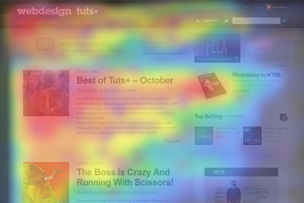

What is the F Layout?
The F layout for web design focuses on the natural instinct of web browsers/surfers. In other words, this type of layout is based on research and eye tracking studies of where the particular eye of a user goes to first when on a website

How Does The Design Work?
The user will start at the top-left side of the screen. Then, they will then scan towards the right to the top-right side of the screen. After, they will move down and read the next row of content in full all the way to the page’s sidebar.